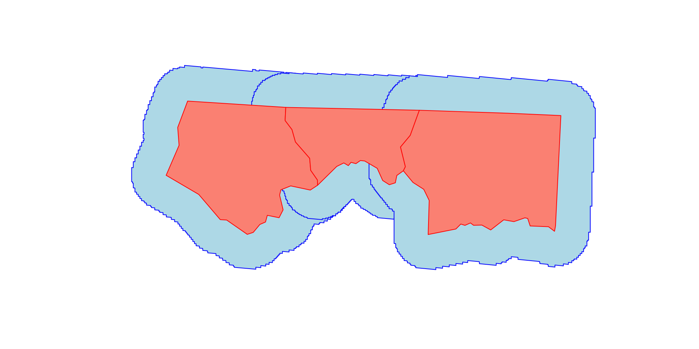
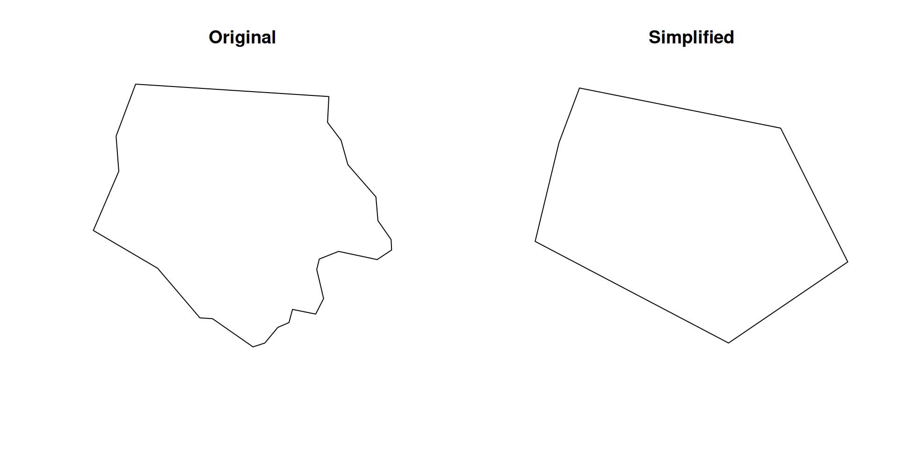
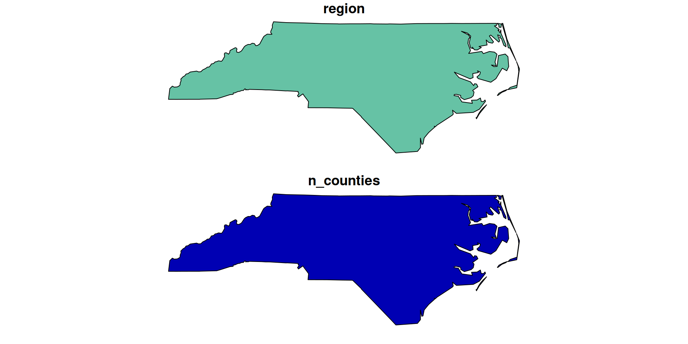
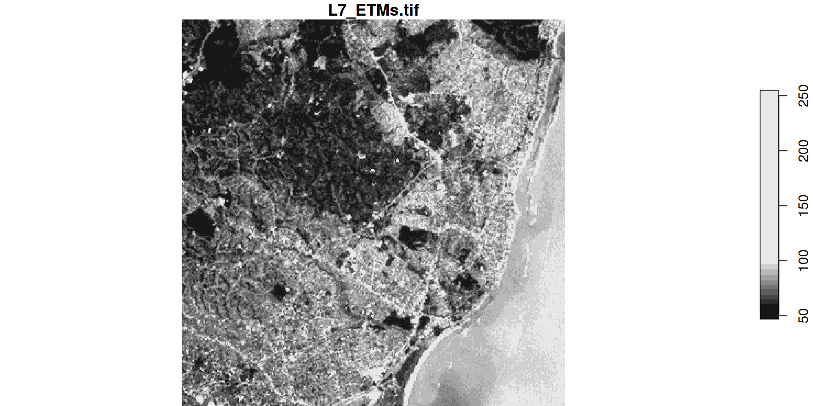
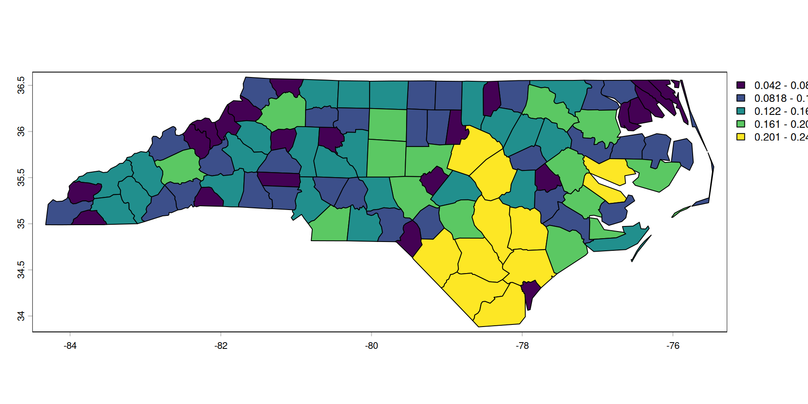
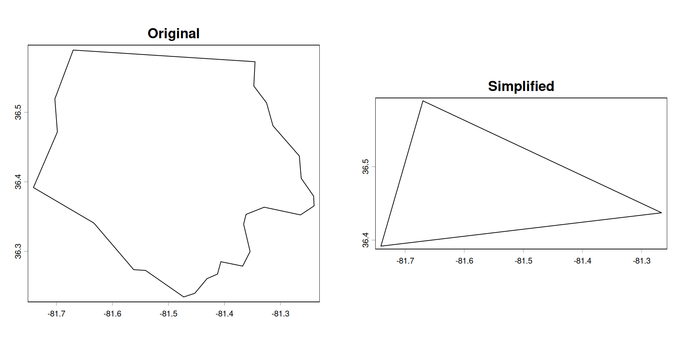
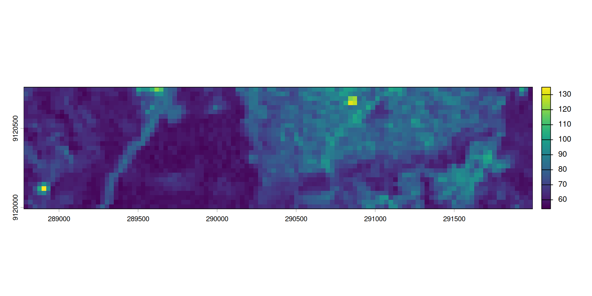

Main packages
- Before
sp+raster - Now
sf+starsterra(+ tidyterra)
2026-03-25
Caution
We won’t cover general ‘what’s the best projection for that’ we will cover ‘how I can change the projection withR’
sp + rastersf + starsterra (+ tidyterra)A nice level of abstraction to work with spatial data
sf GEOS and GDAL PROJ, S2Geometry for spherical operations (on longitude/latitude data).
terra does planar geometry using GEOS and GDAL.
For raster operations, terra relies on PROJ and GDAL rather than S2.
sfSimple features or simple feature access refers to a formal standard (ISO 19125-1:2004) that describes how objects in the real world can be represented in computers, with emphasis on the spatial geometry of these objects. It also describes how such objects can be stored in and retrieved from databases, and which geometrical operations should be defined for them.
The standard is widely implemented in spatial databases (such as PostGIS), commercial GIS (e.g., ESRI ArcGIS) and forms the vector data basis for libraries such as GDAL. A subset of simple features forms the GeoJSON standard.
A data frame with attributes
Simple feature collection with 3 features and 2 fields
Geometry type: POINT
Dimension: XY
Bounding box: xmin: -71.25 ymin: 46.8 xmax: -71.18 ymax: 46.82
Geodetic CRS: WGS 84
bird date geometry
1 Snow Goose 2025-04-12 POINT (-71.208 46.8139)
2 Common Eider 2025-04-13 POINT (-71.25 46.82)
3 Herring Gull 2025-04-14 POINT (-71.18 46.8)st_read()st_write()Reading layer `nc' from data source
`/usr/local/lib/R/site-library/sf/shape/nc.shp' using driver `ESRI Shapefile'
Simple feature collection with 100 features and 14 fields
Geometry type: MULTIPOLYGON
Dimension: XY
Bounding box: xmin: -84.32385 ymin: 33.88199 xmax: -75.45698 ymax: 36.58965
Geodetic CRS: NAD27Simple feature collection with 100 features and 14 fields
Geometry type: MULTIPOLYGON
Dimension: XY
Bounding box: xmin: -84.32385 ymin: 33.88199 xmax: -75.45698 ymax: 36.58965
Geodetic CRS: NAD27
First 10 features:
AREA PERIMETER CNTY_ CNTY_ID NAME FIPS FIPSNO CRESS_ID BIR74 SID74
1 0.114 1.442 1825 1825 Ashe 37009 37009 5 1091 1
2 0.061 1.231 1827 1827 Alleghany 37005 37005 3 487 0
3 0.143 1.630 1828 1828 Surry 37171 37171 86 3188 5
4 0.070 2.968 1831 1831 Currituck 37053 37053 27 508 1
5 0.153 2.206 1832 1832 Northampton 37131 37131 66 1421 9
6 0.097 1.670 1833 1833 Hertford 37091 37091 46 1452 7
7 0.062 1.547 1834 1834 Camden 37029 37029 15 286 0
8 0.091 1.284 1835 1835 Gates 37073 37073 37 420 0
9 0.118 1.421 1836 1836 Warren 37185 37185 93 968 4
10 0.124 1.428 1837 1837 Stokes 37169 37169 85 1612 1
NWBIR74 BIR79 SID79 NWBIR79 geometry
1 10 1364 0 19 MULTIPOLYGON (((-81.47276 3...
2 10 542 3 12 MULTIPOLYGON (((-81.23989 3...
3 208 3616 6 260 MULTIPOLYGON (((-80.45634 3...
4 123 830 2 145 MULTIPOLYGON (((-76.00897 3...
5 1066 1606 3 1197 MULTIPOLYGON (((-77.21767 3...
6 954 1838 5 1237 MULTIPOLYGON (((-76.74506 3...
7 115 350 2 139 MULTIPOLYGON (((-76.00897 3...
8 254 594 2 371 MULTIPOLYGON (((-76.56251 3...
9 748 1190 2 844 MULTIPOLYGON (((-78.30876 3...
10 160 2038 5 176 MULTIPOLYGON (((-80.02567 3...st_crs()st_transform()Coordinate Reference System:
User input: NAD27
wkt:
GEOGCRS["NAD27",
DATUM["North American Datum 1927",
ELLIPSOID["Clarke 1866",6378206.4,294.978698213898,
LENGTHUNIT["metre",1]]],
PRIMEM["Greenwich",0,
ANGLEUNIT["degree",0.0174532925199433]],
CS[ellipsoidal,2],
AXIS["latitude",north,
ORDER[1],
ANGLEUNIT["degree",0.0174532925199433]],
AXIS["longitude",east,
ORDER[2],
ANGLEUNIT["degree",0.0174532925199433]],
ID["EPSG",4267]]Create a function that - read different files - write in geojson in 4326
plot()mapview()st_buffer()
st_distance()st_length()st_union()st_within()st_crosses()
Simple feature collection with 66 features and 2 fields
Geometry type: MULTIPOLYGON
Dimension: XY
Bounding box: xmin: -84.32385 ymin: 33.88199 xmax: -75.7637 ymax: 36.58965
Geodetic CRS: NAD27
First 10 features:
NAME area_km2 geometry
1 Columbus 2450.831 MULTIPOLYGON (((-78.65572 3...
2 Robeson 2439.935 MULTIPOLYGON (((-78.86451 3...
3 Sampson 2438.121 MULTIPOLYGON (((-78.11377 3...
4 Bladen 2289.053 MULTIPOLYGON (((-78.2615 34...
5 Wake 2194.374 MULTIPOLYGON (((-78.92107 3...
6 Pender 2181.567 MULTIPOLYGON (((-78.02592 3...
7 Brunswick 2166.454 MULTIPOLYGON (((-78.65572 3...
8 Johnston 2082.034 MULTIPOLYGON (((-78.53874 3...
9 Duplin 2072.032 MULTIPOLYGON (((-77.68983 3...
10 Beaufort 2045.471 MULTIPOLYGON (((-77.10377 3...
starsstarsSpatiotemporal Arrays: Raster and Vector Datacubes

stars object with 3 dimensions and 1 attribute
attribute(s):
Min. 1st Qu. Median Mean 3rd Qu. Max.
L7_ETMs.tif 1 54 69 68.91242 86 255
dimension(s):
from to offset delta refsys point x/y
x 1 349 288776 28.5 SIRGAS 2000 / UTM zone 25S FALSE [x]
y 1 352 9120761 -28.5 SIRGAS 2000 / UTM zone 25S FALSE [y]
band 1 6 NA NA NA NA stars object with 3 dimensions and 1 attribute
attribute(s), summary of first 1e+05 cells:
Min. 1st Qu. Median Mean 3rd Qu. Max. NA's
L7_ETMs.tif 51 64 75 76.84465 89 255 47488
dimension(s):
from to offset delta refsys x/y
x 1 470 5763741 46.06 NAD83 / Quebec Lambert [x]
y 1 472 -5592885 -46.06 NAD83 / Quebec Lambert [y]
band 1 6 NA NA NA stars object with 2 dimensions and 1 attribute
attribute(s):
Min. 1st Qu. Median Mean 3rd Qu. Max. NA's
L7_ETMs.tif NA NA NA NaN NA NA 12
dimension(s):
from to refsys point
geometry 1 2 SIRGAS 2000 / UTM zone 25S TRUE
band 1 6 NA NA
values
geometry POINT (288776 9120761), POINT (291776 9122761)
band NULLterraterraterra replaces the older raster packageterralibrary(terra)
# Create vector points
pts <- vect(
data.frame(
bird = c("Snow Goose", "Common Eider", "Herring Gull"),
date = as.Date(c("2025-04-12", "2025-04-13", "2025-04-14")),
lon = c(-71.2080, -71.2500, -71.1800),
lat = c(46.8139, 46.8200, 46.8000)
),
geom = c("lon", "lat"), crs = "EPSG:4326"
)
pts class : SpatVector
geometry : points
dimensions : 3, 2 (geometries, attributes)
extent : -71.25, -71.18, 46.8, 46.82 (xmin, xmax, ymin, ymax)
coord. ref. : lon/lat WGS 84 (EPSG:4326)
names : bird date
type : <chr> <Date>
values : Snow Goose 2025-04-12
Common Eider 2025-04-13
Herring Gull 2025-04-14vect()writeVector() class : SpatVector
geometry : polygons
dimensions : 100, 14 (geometries, attributes)
extent : -84.32385, -75.45698, 33.88199, 36.58965 (xmin, xmax, ymin, ymax)
source : nc.shp
coord. ref. : lon/lat NAD27 (EPSG:4267)
names : AREA PERIMETER CNTY_ CNTY_ID NAME FIPS FIPSNO CRESS_ID
type : <num> <num> <num> <num> <chr> <chr> <num> <int>
values : 0.114 1.442 1825 1825 Ashe 37009 3.701e+04 5
0.061 1.231 1827 1827 Alleghany 37005 3.7e+04 3
0.143 1.63 1828 1828 Surry 37171 3.717e+04 86
BIR74 SID74 (and 4 more)
<num> <num>
1091 1
487 0
3188 5 crs()project() name authority code area extent
1 NAD27 EPSG 4267 <NA> NA, NA, NA, NA
buffer()distance()union()intersect()erase()
class : SpatRaster
size : 352, 349, 6 (nrow, ncol, nlyr)
resolution : 28.5, 28.5 (x, y)
extent : 288776.3, 298722.8, 9110729, 9120761 (xmin, xmax, ymin, ymax)
coord. ref. : SIRGAS 2000 / UTM zone 25S (EPSG:31985)
source : L7_ETMs.tif
names : L7_ETMs_1, L7_ETMs_2, L7_ETMs_3, L7_ETMs_4, L7_ETMs_5, L7_ETMs_6 class : SpatRaster
size : 471, 470, 6 (nrow, ncol, nlyr)
resolution : 46.06228, 46.06228 (x, y)
extent : 5763741, 5785390, -5614580, -5592885 (xmin, xmax, ymin, ymax)
coord. ref. : NAD83 / Quebec Lambert (EPSG:32198)
source(s) : memory
names : L7_ETMs_1, L7_ETMs_2, L7_ETMs_3, L7_ETMs_4, L7_ETMs_5, L7_ETMs_6
min values : 54.6343, 37.12177, 24.3444, 10.44152, 5.564501, 2.900728
max values : 255.0000, 255.00000, 255.0000, 202.09982, 222.092819, 206.922241 
Create an app that allows users to upload GeoJSON files and visualize them using Leaflet.
Modify the app to compute the total area when polygons are uploaded and display it in the card header.
Modify the app to also compute the total length for line geometries and display it in the card header.